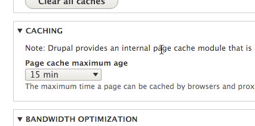
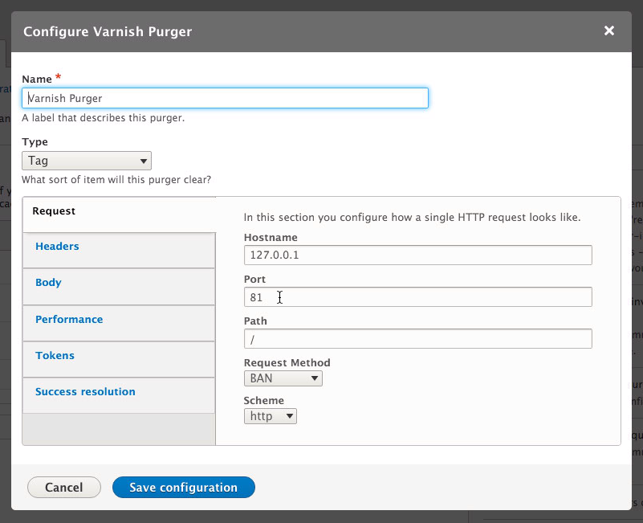
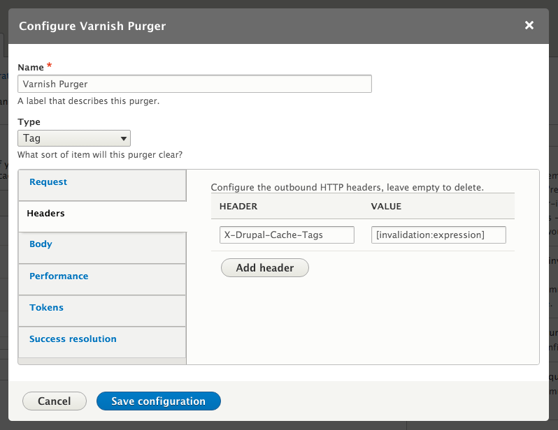

Lets go through some of the common steps required to install and configure Varnish and integrate it with drupal to take your site to the next level.
This article assumes that you have a running instance of Magento2 and that you have administrator rights for said instance, both at the OS and application level. We have tested this using Ubuntu LTS 16.04, Varnish Cache 4.1 and Drupal 8.
If you still need help Installing Drupal 8 visit the Drupal-Site
In case you also donot have Varnish, you will need to follow the instructional section on how to Install Varnish before we can continue.
So now that you have setup Varnish in-front of your Drupal 8 installation, and have apache2 configured, you need to know how to configure Drupal to purge cached contents. By default anonymous page caching is enabled.
To configure caching in Drupal, log in as an administrator on your Drupal site.
Go to the Configuration Menu
Click on Performance
x Cache pages for anonymous users (checked by default) x Cache blocks
Set the Minimum cache lifetime; ~ 60min
Set Expiration of cached pages; ~ 60min
For Drupal’s Performance settings go to /admin/config/development/performance.
Set the value for ‘Page cache maximum age’ as shown below:
Always choose caching time considering in mind a better site performance and yet cache is not stale for too long. This value will solely depend on the type of site you have so good luck making that choice!
Drupal does two things:
containing a space-separated list of all the page’s cache tags.
or configuration is updated that should expire pages with the associated cache tags.
Both of these can be achieved quickly and easily by enabling and configuring the Purge and Generic HTTP Purger modules. Read about the suggested plugins on on our main page.
Next you need to add a ‘purger’ that will send the appropriate BAN requests using purge_purger_http: visit the Purge configuration page, admin/config/development/performance/purge,
Then follow the steps below as in the image:
iii. Configure the Purger’s name (“Varnish Purger”), Type (“Tag”), and Request settings (defaults for Drupal VM are hostname 127.0.0.1, port 81, path /, method BAN, and scheme http):
iv. Configure the Purger’s headers (add one header Purge-Cache-Tags with the value [invalidation:expression]):
Note from the Original Author: Don’t use the header in the screenshot—use Purge-Cache-Tags!
Images and textual courtesy: Jeff Geerling’s Post on Drupal 8 and Varnish
This is basic configurtation for Varnish and Drupal, to go more in depth, use vcl to write your own customized codes. This wiki contains some templates and examples.
Varnish caches everything, so you need to write a rule to exclude what you do not want to cache.
Varnish by default caches to tyeps of requests: GET and HEAD. Other requests like DELETE, POST and PUT are never cached. That means you donot have to worry about requests that make changes to data, because they are allowed to get to the application.
Pages protected using HTTP Authorization is never cached. So for your application specific mechanisms, you need to add a rule like the following to ensure that login pages aren’t cached.
# exclude drupal login url from caching
if (req.url ~ "^/status\.php$" ||
req.url ~ "^/update\.php" ||
req.url ~ "^/install\.php" ||
req.url ~ "^/admin" ||
req.url ~ "^/admin/.*$" ||
req.url ~ "^/user" ||
req.url ~ "^/user/.*$" ||
req.url ~ "^/users/.*$" ||
req.url ~ "^/info/.*$" ||
req.url ~ "^/flag/.*$" ||
req.url ~ "^.*/ajax/.*$" ||
req.url ~ "^.*/ahah/.*$") {
return (pass);
}
if we did end up caching login pages, we could end up serving the same content to all the users. That takes us to our next topic, Cookies!
Cookies are everywhere these days! And we need some of them. But they are also one of the most important things in the caching decision. Making a choice between which cookies to cache or include is very important for a web application.
Examples such as your site statistics analysis or your website indexing requires cookies too. But these are not used by your drupal site at all but if they didn’t exist on your site, your web contents wouldn’t be indexed for searches. Either way these cookies makes your sites content uncacheable and therefore you as the developer has to make caching choices very carefully.
On the other hand, cookies related to page designs and other static contents need to be allowed to cache. Below is an example of caching cookies for your drupal site:
#Cookie example
#Collected from: https://fourkitchens.atlassian.net/wiki/display/TECH/Configure+Varnish+3+for+Drupal+7
# this is an example of Varnish 3, needs to be tested for varnish 4
sub vcl_recv {
if (req.http.Cookie) {
# removing these styling and photo cookes from here will allow it to be cached
if (req.url ~ "(?i)\.(css|js|jpg|jpeg|gif|png|ico)(\?.*)?$") {
unset req.http.Cookie;
}
set req.http.Cookie = ";" + req.http.Cookie;
set req.http.Cookie = regsuball(req.http.Cookie, "; +", ";");
set req.http.Cookie = regsuball(req.http.Cookie, ";(SESS[a-z0-9]+|SSESS[a-z0-9]+|NO_CACHE)=", "; \1=");
set req.http.Cookie = regsuball(req.http.Cookie, ";[^ ][^;]*", "");
set req.http.Cookie = regsuball(req.http.Cookie, "^[; ]+|[; ]+$", "");
if (req.http.Cookie == "") {
# If there are no remaining cookies, remove the cookie header. If there
# aren't any cookie headers, Varnish's default behavior will be to cache
# the page.
unset req.http.Cookie;
}
else {
# If there is any cookies left (a session or NO_CACHE cookie), do not
# cache the page. Pass it on to Apache directly.
return (pass);
}
}
# removing cookies for static files
sub vcl_backend_response {
# Remove cookies for stylesheets, scripts and images used throughout the site.
# Removing cookies will allow Varnish to cache those files. It is uncommon for
# static files to contain cookies, but it is possible for files generated
# dynamically by Drupal. Those cookies are unnecessary, but could prevent files
# from being cached.
if (bereq.url ~ "(?i)\.(css|js|jpg|jpeg|gif|png|ico)(\?.*)?$") {
unset beresp.http.set-cookie;
}
}
Drupal sends its own caching information in response headers just like many other web applciations. These headers are obviously important to your web application and if you configure your varnish to never cache any response, this could destabilize your web application. So you need add some configurations to your vcl code that will cache your drupal header responses but not cache other headers.
This bit of code is to allow which IP addresses can access the config files.
acl internal {
"192.x.x.x"/24;
xxx.xxx.xx.xx;
}
# Allowing which address can access cron.php or install.php,
# add the following in acl.
Don’t forget to restart after making changes:
sudo systemctl restart varnish.service
sudo systemctl restart apache2.service
If you are interested in Varnish, you can always give Varnish Plus a go. There’s a free trial available. You can capture real-time traffic statistics, create a paywall for premium content, simultaneously work on administration across all Varnish servers, record relationships between web pages for easy content maintenance, detect devices used for browsing, and accelerate APIs.
{kind=link}
{kind=link}
{kind=link}
{kind=link}
{kind=link}